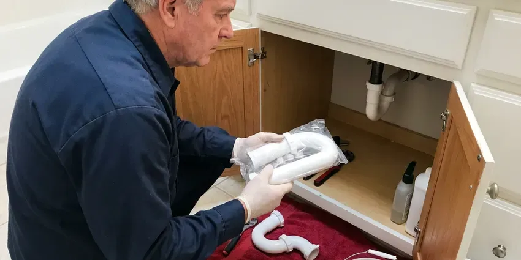

Toilet Repair in Minnetonka, MN
Water around the toilet base in Minnetonka, MN usually means a failed wax ring. CNV Plumbing pulls the bowl, checks the flange and resets it on a new seal.
- Parts on the Truck
- No Surprise Charges
- Workmanship Guaranteed
- Flappers and Seals Stocked
Need a Plumber for a Bad Toilet in Minnetonka, MN?
Shut the angle stop behind the toilet, then give us a call at (612) 712-9569.
Same-Day Toilet Repair in Minnetonka, MN
CNV Plumbing sends plumbers who carry flappers in both 2 inch and 3 inch sizes, adjustable fill valves, wax and waxless seals, closet bolts and braided supply lines. That stock covers most of the toilets we see on the first visit. Special orders are rare. Older Eljer and Briggs tanks are the usual exception.
Some of what we do:
- Find and fix leaks at the tank and base
- Stop phantom refills and nonstop running
- Replace failed flappers and fill valves

Additional Bathroom Plumbing Services in Minnetonka, MN
From toilets to showers, our bathroom plumbing team in Minnetonka, MN repairs, installs, and replaces every fixture with clean, code-compliant work.


Customers
Why Choose CNV Plumbing for Toilet Repair in Minnetonka, MN?
Our plumbers work on Kohler canister valves, American Standard Champion 4 inch flappers, TOTO 3 inch seals and Mansfield valves, which do not take generic flappers. Using the right part means no leaking at the seat. A universal flapper on one of those tanks tends to leak again within a few weeks.
- Clear Pricing, The price you approve is what shows on the invoice.
- Parts On Hand, Trucks carry both common flapper sizes plus wax rings.
- Leak Testing, Every repair ends with a dye test and a dry base.
Citywide Coverage
We repair toilets in every part of Minnetonka, from older houses with cast iron drains to newer builds with PVC and plastic flanges. Every neighborhood gets the same stocked truck and the same flat pricing. Distance does not change the rate.
Experienced Team
Plumbers on our team explain what failed in plain words and show you the old part, whether it is a warped flapper or a wax ring that has gone flat. No jargon needed. Questions are welcome at any point, and we will tell you which repairs can wait.
Safety-First Approach
Supply connections and flange attachment follow plumbing code, and we use corrosion-resistant closet bolts instead of reusing the old rusted ones. Rusted bolts tend to snap under torque. We do not reconnect a brittle supply line, because that is how a bathroom floods.
Trusted Certified Minnetonka Plumbing Services Professionals
At CNV Plumbing, we take pride in licensed, certified plumbing services throughout Minnetonka, MN. Credentials matter in this trade. Every repair, install and maintenance visit follows strict safety and quality rules, and the plumbers doing the work carry recognized industry credentials.
Call Us Now PHCC Plumbing Contractor Recognition
PHCC Plumbing Contractor Recognition Better Business Bureau (BBB) Accreditation
Better Business Bureau (BBB) Accreditation Angi Certified Pro
Angi Certified Pro ISO 9001 Quality Management Certification
ISO 9001 Quality Management CertificationWhat We Fix on Toilets in Minnetonka, MN
Toilet Gasket and Seal Replacement in Minnetonka, MN
The rubber parts in a toilet, the flapper, the tank-to-bowl gasket, the bolt washers and the wax ring at the floor, all break down with age and chlorine. They get stiff. Hardened rubber stops sealing and lets water seep out slowly where you will not see it until the floor stains. We replace the whole set of tank seals at once when one is gone.

Toilet Flush Repair in Minnetonka, MN
Two or three tries to get a full flush points to a flapper closing too early, a chain hooked in the wrong hole, scale in the rim jets, or a cracked overflow tube letting water bypass the bowl. Each one has a tell. Our plumber watches a complete flush with the tank lid off and replace the flush valve if the overflow tube is cracked, since it cannot be patched.
Cracked Tank and Supply Line Repair in Minnetonka, MN
Braided supply lines last years, but the plastic nut on the toilet end can crack and a bulge in the braid means the inner hose is about to burst. Every visit includes a look at the supply line. Bulges get replaced on the spot. If you still have a vinyl or solid plastic line, we change it to braided stainless before it lets go.
Toilet Tank and Bowl Crack Repair in Minnetonka
Hairline cracks in a tank can sit for years and then split open when someone sets a heavy lid down or a bolt is tightened too far. Epoxy does not hold under water pressure for long. We replace it. A matching replacement tank is often an option, and it can cost less than a whole new toilet.
Running Toilet Fixes in Minnetonka
Phantom refills, the tank topping itself off for a few seconds in the middle of the night, almost always mean a slow leak at the flapper. The water level drops until the fill valve kicks on again. Other times the refill tube sits too deep in the overflow pipe, which siphons the tank. We clip it above the water line.
Pressure-Assist and Dual-Flush Repair in Minnetonka
Pressure-assist toilets use a sealed vessel inside the china that compresses air with incoming water pressure, and the cartridge inside that vessel eventually wears out. You will not find most of these parts at a hardware store. We carry Flushmate cartridges and dual-flush seals for the common TOTO and American Standard models, and we check house pressure, since these units need steady line pressure to flush properly. Low line pressure gives you a weak, half-hearted flush.
Commercial Toilet Repair in Minnetonka
Office and retail restrooms take more flushes in a day than a house sees in a month, so the parts wear faster and fail harder. Commercial bowls usually run on flushometer valves rather than tanks, and those need diaphragm kits and vacuum breakers from time to time. We carry Sloan and Zurn kits. If downtime is a problem, we can come in before you open or after you lock up.

Fill Valve Replacement in Minnetonka
Old ballcock valves with a brass arm and a big plastic float are loud and slow to refill, and they tend to stick open when scale builds up in the ports. We replace them with an adjustable modern fill valve from Fluidmaster or Korky and set the height so the critical level mark sits at least an inch above the overflow. It is a twenty-minute job. You will notice the difference the first night, because the tank stops hissing.
Toilet Repair Near Me in Minnetonka, MN
Our trucks are stocked for the toilets most common in Minnetonka homes, which means two flapper sizes, several fill valves, wax and waxless seals, and closet bolts in two lengths. Most calls finish with the toilet fixed on the first trip. Special parts are the exception.
A local plumber knows that a Minnetonka house built in the 1960s probably has a cast iron closet bend and a brass angle stop that has not been turned in decades. That changes how we work. We bring a replacement stop valve on every toilet call in case the old one fails when we close it.
CNV Plumbing at a Glance
- Fully licensed plumbing team covering Minnetonka, MN
- Same-day appointments and 24/7 emergency response
- Upfront, flat-rate pricing before work begins
- 4.8-star rated by 501+ Minnesota customers
Minnetonka Map
Minnetonka Information
- Population
- 52,463
- Area codes
- 952/763/612
- Service area
- Minnetonka and communities within 40 miles
- Nearby
- St. Louis Park, Edina, Eden Prairie, Plymouth
A wax ring that lets go or a flush valve seat crusted with scale can waste water for months before anyone notices in a Minnetonka home. Private wells are widespread, so homeowners around Minnetonka should test for hardness and iron before sizing a treatment system. An early call keeps it a parts swap instead of a floor job.
Expert Services
Call CNV Plumbing for reliable plumbing work done by licensed pros in Minnetonka, MN.
Our Specialized Plumbing Services in Minnetonka, MN
At CNV Plumbing, we handle the full list of plumbing services across Minnetonka, MN. We go from leak detection all the way to full system installations, for homes and commercial buildings, and we do it quickly at a fair price. Here are the core services we offer:


Our Toilet Repair Routine in Minnetonka, MN
One visit, one price and a toilet that works when we leave in Minnetonka, MN.
Schedule the Visit
Reach CNV Plumbing at (612) 712-9569. You answer a few quick questions so the right parts come along.
Find the Cause
A licensed plumber comes to your Minnetonka home, tracks down the failed part and gives you a flat price.
Fix It
Once you approve, the repair gets done with quality parts and a final leak check.
Frequently Asked Questions About Toilet Repair in Minnetonka
Most simple toilet repairs, a new flapper or fill valve, cost about $125 to $275 installed. Pulling and resetting a toilet on a fresh wax ring usually runs $175 to $350, and a flange repair can bring the total to $300 to $500. You approve the flat price before we pick up a tool.
Flapper and fill valve jobs take twenty to forty-five minutes. A full pull and reset on a new wax ring takes about an hour, and a flange repair adds another thirty to sixty minutes depending on what is under the floor. Deep clogs take longer.
Constant running, a weak flush, water at the base and a bowl that rocks are the big four. Gurgling or whistling from the tank points to a valve problem, and a hairline crack in the porcelain should be looked at before it spreads. Cracks are the one sign you should not sit on.
Flush only paper, and keep wipes, floss, paper towels and cotton swabs in the trash where they belong. Fix a running toilet the week it starts, because the leak wears the flush valve seat rougher over time and turns a cheap flapper job into a full flush valve replacement. Once a year, look at the supply line for bulges or rust.
Repeat clogs usually come from wipes, toys, too much paper per flush, or an early low-flow toilet that never moved waste well. Other times the trouble is further down the line, like a sagging drain, a crushed pipe, roots in the sewer or a blocked vent that keeps the bowl from draining with full force. Cameras settle the question.
You can, as long as you match the size, 2 inch or 3 inch, and the flush valve seat underneath is smooth. Turn off the angle stop and flush first. Anything at the base or the flange is a different matter, because a bad reset can rot the subfloor before you notice.
Under an hour for most. Running toilets and supply line swaps are often done in thirty minutes, while a base leak that needs the toilet pulled and the flange repaired can take two hours or a little more. A clog in the main line is the one that can run longer.
We do. Older homes still have Eljer, Briggs, Crane and Universal Rundle toilets, and while some of their flush valves take odd parts, adapters and universal kits cover a good share of them. When a part is no longer made, we say so and price the alternatives.
What Our Customers Say About Our Plumbing Experts

Marcus H.
Grease from the fryer line kept clogging the kitchen drain at my diner. CNV Plumbing hydro jetted the line after closing, showed me the buildup on camera, and set us up on a quarterly cleaning so it does not catch us on a Friday again.
Drain Cleaning · Edina, MN
Brian W.
I smelled gas behind the dryer and called right away. The plumber found a corroded flex connector, replaced it, and pressure tested the whole line before turning the gas back on. He let me watch the gauge hold steady for fifteen minutes.
Gas Line Repair · Bloomington, MNPaul B.
Our pit pump ran nonstop even in dry weather. The plumber found the check valve was stuck open, so the same water kept cycling back into the pit. New valve, new float switch, done in an hour. It runs quiet now.
Sump Pump · Bloomington, MN
Monica A.
Our water bill nearly doubled in one month with no change in how we used water. The tech checked the meter, heard the leak under the hallway with his equipment, and opened a hole about a foot square. Fixed the same day.
Slab Leak Repair · Minneapolis, MN
Emily R.
The shutoff valve under our kitchen sink snapped off in my hand on a Sunday morning. CNV Plumbing had someone out by early afternoon. He replaced both angle stops with quarter turn valves and showed me where our main shutoff was, which I honestly did not know.
Plumbing Repair · Plymouth, MNSofia M.
Two new toilets went in during one visit. The tech set them on new wax rings and swapped the old supply lines. He also noticed our bathroom faucet dripping and replaced the cartridge while he was there. No mess left behind.
Toilet Installation · St. Louis Park, MN